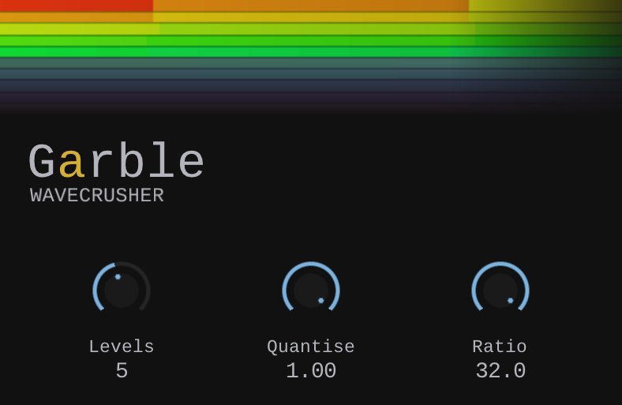

I made Garble from a compression algorithm I developed
during my PhD research.
The original version was for robots communicating over unreliable
network links. This version runs on audio.
It is close to bitcrushing in spirit, but it does not just reduce
the sample rate uniformly. Garble breaks the signal into wavelet
approximations, then lets you crush, quantise, and remove detail
at different resolutions. This distinction is why I call it a wavecrusher rather than a
bitcrusher.

I originally built this technology for robotics research. The problem was communication over unreliable links: robots still need useful information when the network is slow, noisy, intermittent, or degraded.
The compression approach keeps the coarse structure of a signal and throws away detail when bandwidth is limited. At some point I wondered what that would sound like on music. Garble is the result.
It uses a Haar wavelet transform to split audio into coarse averages and detail bands. Then it quantises and drops parts of that representation before reconstructing the signal.
The prism visuals are decorative, but they are not just decoration. They are derived from the same wavelet-compression logic that powers the plugin, so the animation is an echo of the algorithm rather than pure ornament.
So yes, it can feel related to a bitcrusher. But the failure mode is different. A normal bitcrusher reduces sample resolution directly. Garble works on approximations of the signal. As you push it harder, the fine detail disappears first and the larger-scale movement can remain.
A bitcrusher usually applies the same kind of reduction directly to the sample stream. Garble first transforms the signal into wavelet coefficients, then crushes that representation before decoding it back to audio.
Think of it less like lowering the bit depth of a waveform and more like listening to a progressively simplified version of the sound. The broad contour, envelope, and energy can survive while smaller detail is removed or quantised.
On some material it behaves like a broken codec. On other material it becomes a rough textural filter. On dense mixes, you can sometimes hear the highest-energy parts of the signal survive longest as the rest falls away.
Garble is made with CLAP. It is free, open-source, and cross-platform. It runs on Windows, macOS, and Linux. A VST3 version is provided, but it is actually a wrapped CLAP plugin.
Free. No registration. No royalties.
Drop the plugin file into your plugins folder and try it.
Unzip the download, then copy the plugin file to the correct folder. Create the folder if it doesn't exist yet.
CLAP
~/Library/Audio/Plug-Ins/CLAP/Garble.clap
VST3
~/Library/Audio/Plug-Ins/VST3/Garble.vst3
macOS will block Garble because it isn't signed. Open Terminal and run whichever line matches what you installed:
xattr -dr com.apple.quarantine ~/Library/Audio/Plug-Ins/CLAP/Garble.clap xattr -dr com.apple.quarantine ~/Library/Audio/Plug-Ins/VST3/Garble.vst3
You only need to do this once. Then rescan plugins in your DAW.
Unzip the download, then copy the plugin file to the correct folder. Create the folder if it doesn't exist yet.
CLAP
~/.clap/Garble.clap
VST3
~/.vst3/Garble.vst3
Rescan plugins in your DAW and Garble should appear.
Unzip the download. The standard locations are:
VST3
C:\Program Files\Common Files\VST3\Garble.vst3
CLAP
C:\Program Files\Common Files\CLAP\Garble.clap
Some DAWs scan a different folder — check your DAW's plugin settings if Garble doesn't appear after a rescan. I don't have a Windows machine so I haven't been able to test this myself.
This is pre-1.0 software. I'm not a professional audio programmer — I'm a robotics researcher with a music hobby who ported my algorithm to audio because I thought why not. I've tested Garble as thoroughly as I can, but it may have bugs, and it may even crash your DAW. I don't have a Windows machine so that version is totally untested by me. If something goes wrong, please let me know on GitHub and I'll do my best to fix it.